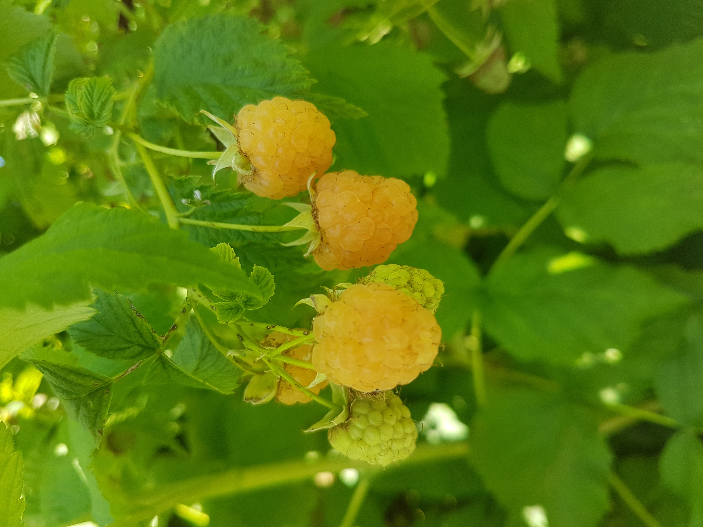
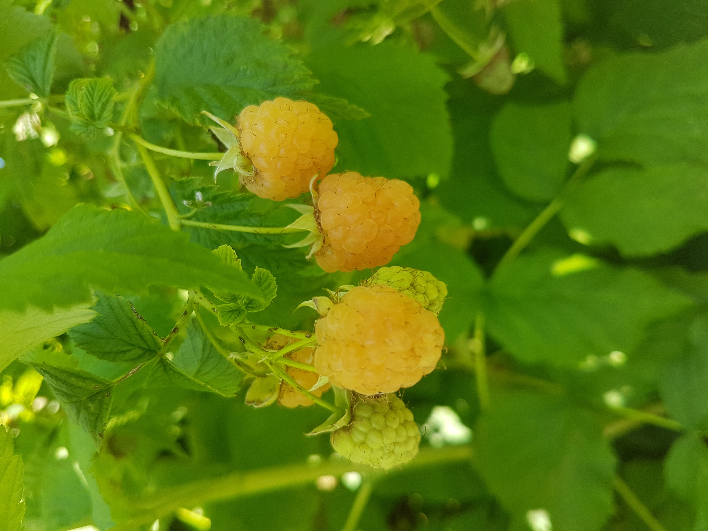

Nos Marchés de Noël et Cueillette Libre
Venez nous retrouver sur les marchés de Noël en Savoie à ces dates fictives :
- Marché de Noël de Chambéry : 2, 3 et 4 décembre 2024, Place de la Gare
- Marché de Noël d'Aix-les-Bains : 9, 10 et 11 décembre 2024, Place des Eléphants
- Marché de Noël de Modane : 16, 17 et 18 décembre 2024, Centre-ville
- Marché de Noël de Saint-Jean-de-Maurienne : 23, 24 et 25 décembre 2024, Place de l'Hotel de Ville
Venez découvrir nos produits artisanaux et nos boîtes festives, ainsi que nos délicieuses confitures dans une ambiance chaleureuse et conviviale !
Nous vous offrons également des jours de cueillette libre au verger pour profiter des fruits frais et goûter à nos produits en direct :
- Samedi 1er juin 2024 : Cueillette libre de fraises et framboises
- Dimanche 2 juin 2024 : Cueillette libre de fraises, framboises et mûres
- Samedi 8 juin 2024 : Cueillette libre de fraises et groseilles
- Dimanche 9 juin 2024 : Cueillette libre de fraises et mûroises
Venez passer un moment agréable au Verger de l'Escampette pour cueillir vos fruits et en apprendre davantage sur notre démarche en Agriculture Biologique.
Pour plus d'informations ou pour réserver votre place pour la cueillette libre, contactez-nous :
Téléphone : 07 89 53 11 66
Email : ferme.lescampette@orange.fr


 
